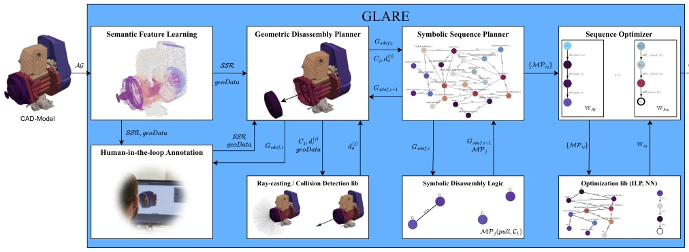
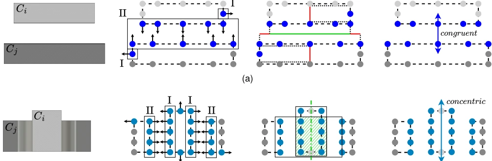
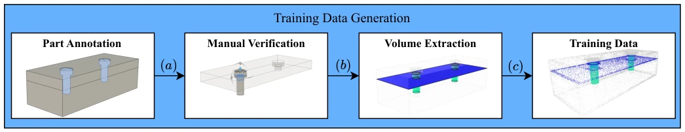
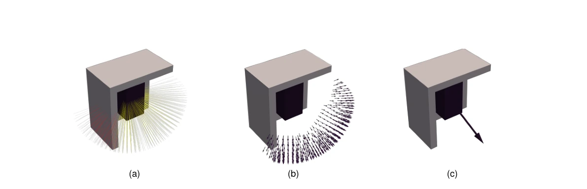
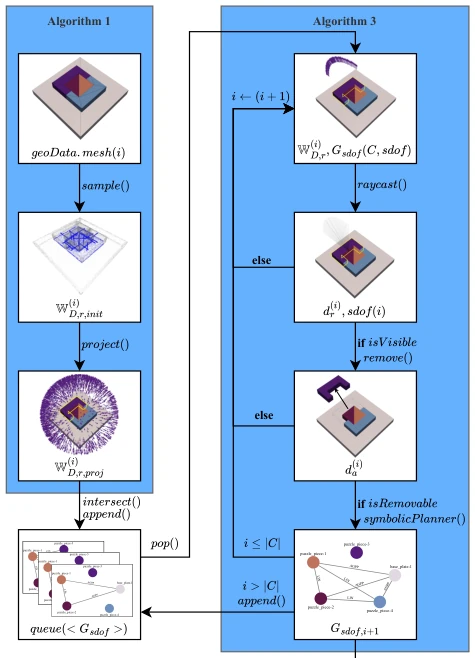
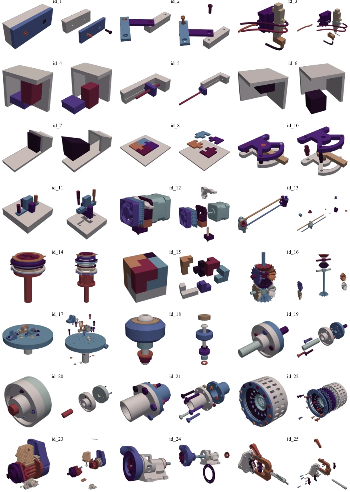
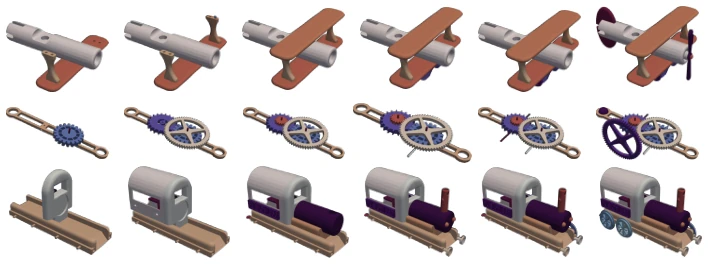
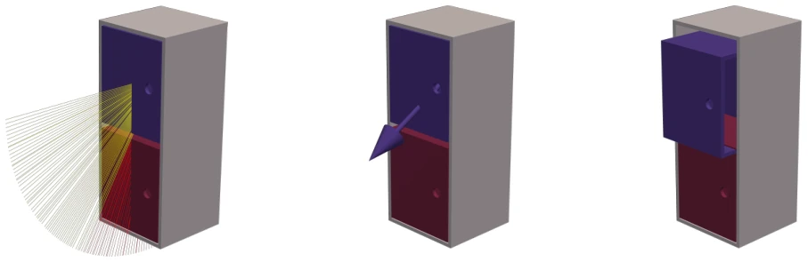

The GLARE framework proposed in this paper attempts to solve the Assembly Sequence Planning (ASP) problem using a "hybrid" strategy. It cleverly combines semantic relations extracted by deep learning with symbolic geometric planning, preserving interpretability while enhancing robustness against imperfect CAD data. The highlight lies in the "human-in-the-loop" mechanism, allowing manual correction when planning fails, which is very practical for industrial deployment. However, the drawbacks are obvious: the core still relies on CAD models, not end-to-end visual perception, and an 85% success rate means there are still 15% failure cases requiring human intervention. Compared to pure learning methods, it sacrifices some generalization for efficiency; compared to pure symbolic methods, it introduces learning uncertainty. For the academia pursuing "black boxes", this might not be sufficiently "sexy", but for engineers in factories, it counts as a usable "middleware", worth attempting in specific scenarios.
Assembly Sequence Planning (ASP) belongs to NP-hard problems [1] due to its combinatorial explosion nature, making traditional exhaustive methods infeasible in complex industrial scenarios. Existing methods are mainly divided into two categories: one is symbolic geometric-based methods, requiring perfect relation models [11], but real-world CAD data often lacks semantic contact information or has tolerances, leading to planning failure; the second is pure data-driven methods [6], which can handle uncertainty but lack transparency and require massive annotations. The authors point out that although industrial site CAD data is abundant, it is difficult to utilize directly due to design tolerances and lack of semantics. Therefore, there is an urgent need for a hybrid framework that can tolerate CAD data defects while maintaining planning transparency and computational efficiency, to bridge the gap between data-driven and geometric symbolic methods, achieving reliable conversion from design data to robot instructions.
The GLARE framework is divided into three stages: preprocessing, geometric symbolic planning, and optimization. First, the Semantic Feature Learning module utilizes PointNet++ to predict semantic spatial relations (SSR) from CAD point clouds, such as congruent, concentric, screwed. Through the Human-in-the-loop mechanism, users can correct prediction errors to generate a complete symbolic relation graph Gssr. Second, the Geometric Disassembly Planner calculates absolute disassembly directions based on relative degrees of freedom, utilizing ray-casting and collision detection to determine visible space, avoiding full state space search. The Symbolic Sequence Planner applies symbolic logic to generate manipulation primitives and sorts components by connection cost. Finally, the Sequence Optimizer uses ILP or NN to optimize sequence costs (motion + tool change). The core innovation lies in mapping learned fuzzy relations into symbolic planning, and converting relative degrees of freedom into absolute directions through ray casting, achieving efficient conversion from geometric data to executable sequences, while reducing computational complexity through hierarchical planning.

Figure 1: Framework architecture of GLARE. The Semantic Feature Learning module predicts the semantic spatial relations SSR, which can be verified and corrected by the Human-in-the-Loop Annotation module. The resulting symbolic relation graph Gssr is processed by the Geometric Disassembly Planner, which combines ray-casting and collision checking to determine visibility spaces and valid absolute disassembly directions d(j) a . Based on these results, the Symbolic Sequence Planner applies symbolic disassembly logic to generate sets of valid manipulation primitives {MPij}. Finally, the Sequence Optimizer computes the optimized manipulation sequence ⟨MP⟩. In case of planning failure, the predicted relations can be re-evaluated and corrected through the human-in-the-loop annotation process.

Figure 2: Determination of valid relations using two sliced parts and their semantic annotation from PointNet++ per approach as an example. (a) shows the procedure for congruent. Groups of labeled points are gathered by mapping to planar faces. Pairs of these groups with opposing normals (I and II) are tested by overlap of the projection (green) of their respective faces to validate a relation. (b) shows the procedure for concentric and screwed. Labeled points are also clustered with normals, but with an angle deviation, and further filtered by mapping back to cylindrical faces (I and II). Further evaluation by axis alignment and overlapping of oriented bounding boxes (shaded green) validates a relation.

Figure 3: Procedure for the generation of training data. First, threaded components are identified. The automatically identified SSR (a) can be manually verified. Areas of faces with SSR are thickened to create relation volumes (b). Finally, points are sampled from the mesh surface, where points within the relation volumes get labeled (c). stands for congruent, for concentric, and for screwed relations.

Figure 4: Example of the mapping fra : d(i) r 7→d(i) a , without considering ASP as a combinatorial problem. (a) Relative Disassembly Space W(i) D,r, the directions

Figure 5: Simplified flowchart of the geometric-symbolic disassembly planning process. Algorithm 1 computes the initial Gsdof and dr. For each graph state, Algorithm 3 executes the geometric-symbolic planner, generating the set of motion primitives {MPij} for all components Ci that are removable within the current visibility space j, while updating the graph to the next state Gsdof,i+1 after each successful component removal.
The authors evaluate on a self-built dataset (25 assemblies, 2-45 parts) and the ASAP test set. Preprocessing tested relation extraction accuracy under different tolerances (ISO 2768-1), mIoU is about 54.6%, tolerance impact is small. The planner compared with baseline ASAP [6], on the ASAP test set success rate reached 85.83% (ASAP was 82.08%), median planning time reduced by more than one order of magnitude, reduced 50 times for over 30 parts. Ablation found collision detection is the main cause of time consumption, symbolic logic proportion is small. ILP optimization has limited improvement on cost, NN is already close to local optimum. Results indicate that the framework significantly improved planning success rate while maintaining efficiency, especially suitable for complex industrial assembly, proving the advantage of hybrid methods in tolerating data noise.

Figure 6: Examples from the used dataset. The assemblies are shown in an assembled and disassembled state. Sources can be found in Table A.5.

Figure 8: Example assembly sequences of the ASAP test data generated with GLARE.

Figure 9: Limitations of the mapping fra : d(i) r 7→d(i) a through ray-casting and accumulation on a simplified example of the ASAP test set. (a) shows the ray-cast over the relative disassembly space of the upper drawer (purple) with the hitting rays shown in yellow and the occluded rays shown in red. Since the two drawers are too far apart, no congruent relation between them is induced. The resulting disassembly direction (b) results in a collision between the drawers (c).